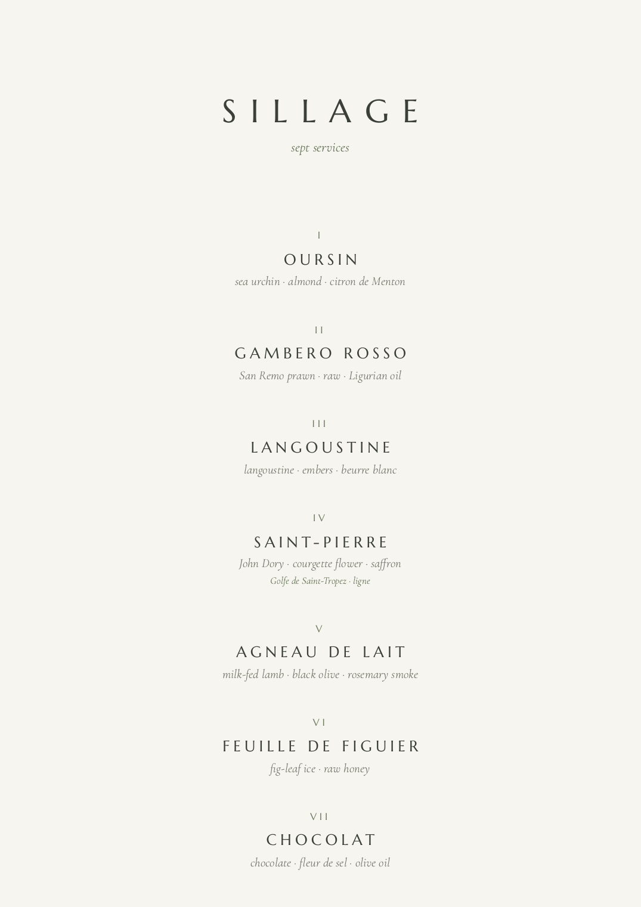
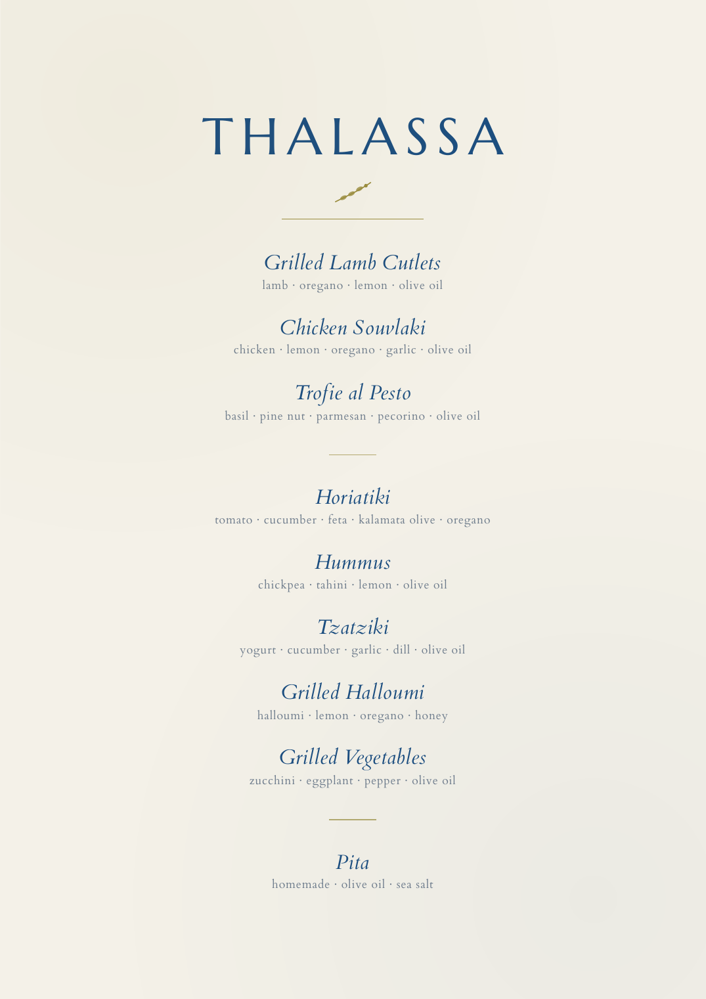
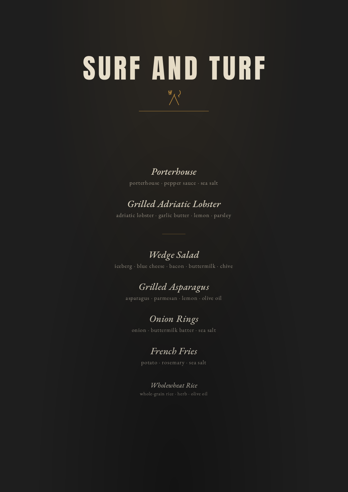
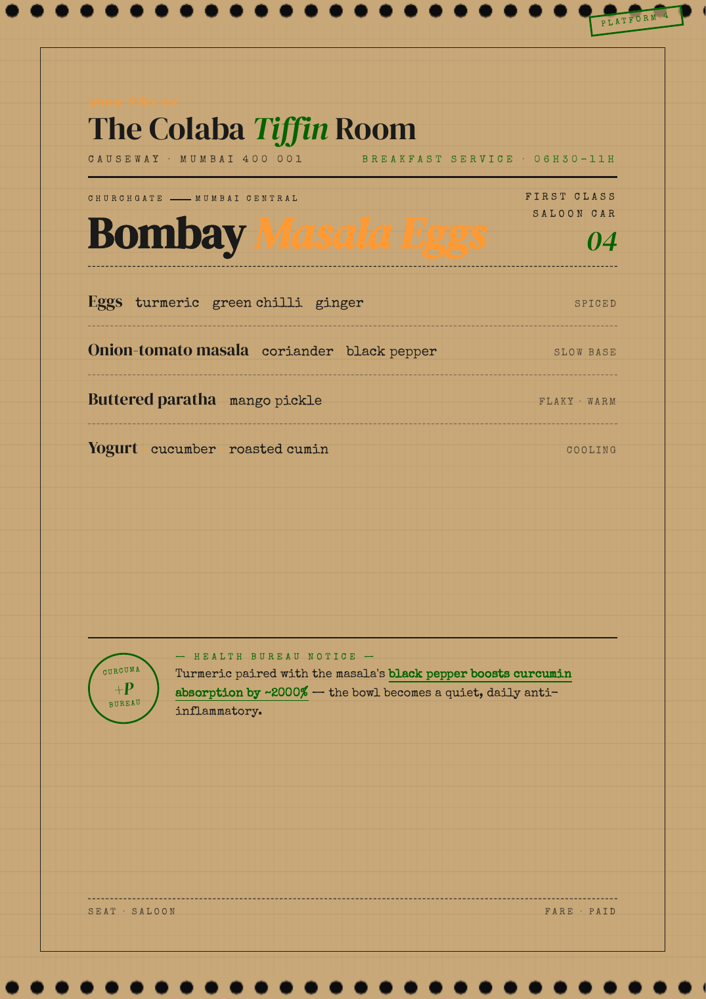
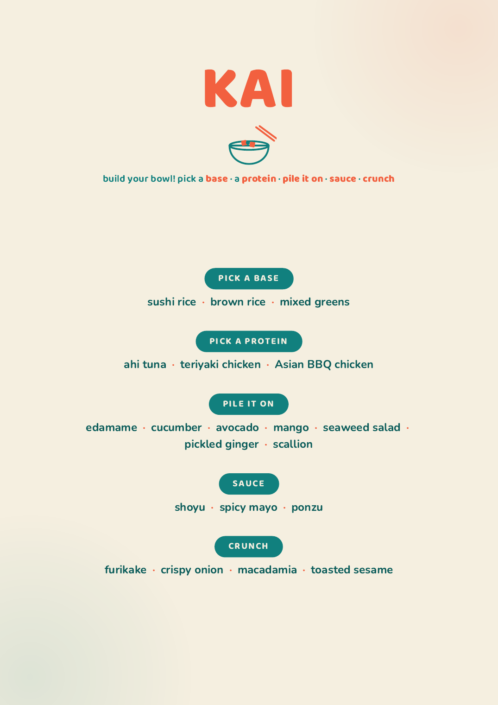

- One prompt that designs charter-ready menus in any AI — Claude, ChatGPT, Gemini — and prints a one-page card from a browser, no LaTeX.
- The single rule that makes the output feel like a real galley: every menu anchored to a named touchstone, never a vibe.
- The v4 composition formula: two proteins, one starch, and a garden that follows the vibe — plus a one-dish breakfast that always carries a true fact.
- Why a prompt with a memory beats a clever one-off — and exactly how to install and run it.
In this article
- The real cost of the blank page
- What the prompt actually is
- Anatomy: floor, ceiling, memory
- The touchstone: the idea everything grows from
- What goes on the plate: the composition formula
- The tasting menu: when chronology is the design
- What you actually get: real cards from service
- The self-improving part most prompts never have
- What never touches the card
- Where to run it: Claude, ChatGPT, Gemini, Claude Code
- Installing it
- The core prompt, ready to paste
- Ready-to-paste prompts for the jobs you run
- A real session, request to PDF
- Getting the best results
- What it will not do for you
The real cost of the blank page
The cooking was never the hard part. The twenty minutes of admin before service is.
You can cook. The hard part is the twenty minutes before service, alone in a galley that moves, turning “guests want Italian tonight, one coeliac, owner hates fennel” into a menu, a dish order, a dietary cross-check, and a card that looks like a restaurant printed it. Do that fourteen times a week for six weeks and the admin becomes the job.
A general AI helps a little. Ask ChatGPT for “an Italian dinner menu for eight” and you get something competent and generic — a numbered list with section headers, “Italian Dinner” across the top, commas everywhere, no idea the owner hates fennel because you never told it, and a format you still rebuild by hand. The model is capable. The instruction is thin. That gap is the whole problem this prompt closes.
A purpose-built prompt is not a smarter model. It is the same model handed a chef’s standards, written down once, in full — and, here, a memory of every menu it has already shipped. The difference in the output is not subtle.
What the prompt actually is
The system is a single self-contained instruction file — the menu agent, currently v4-unified, roughly 1,100 lines. It is not a one-liner. It is closer to a service manual fused with a logbook: the complete specification for how a menu gets anchored, composed, written, designed, validated, and turned into a one-page card — plus a running inventory of every menu it has produced. Its own header says it plainly: “No external soul doc — this IS the source of truth.”
The July 2026 revision (v4) added five things the earlier versions left to taste: an automatic composition formula for any lunch or dinner, a one-dish breakfast rule with a two-tier true-fact note, a guest-profile step that reads preference sheets before proposing anything, a fun register for crew cards, and a trend pulse that keeps the touchstone library anchored to the current dining scene instead of the year the prompt was written.
The most important change from earlier versions: the default output is no longer LaTeX. The agent now authors each menu as a single self-contained HTML file and renders it to a full-bleed A4 PDF. In practice that means you no longer need a TeX install to get a guest-grade card — the menu is an HTML file you open and print to PDF from any browser. LaTeX stays as an option for plain monochrome crew cards; HTML is the default for anything a guest will see.
Anatomy: floor, ceiling, memory
A constitution with a ledger stapled to the back. Three layers do the work.
Twenty-one non-negotiables in four phases: what never appears on the card (Identity), how dishes are written (Content), what ships (Output), how it gets made (Process) — including the v4 composition formula and the one-dish breakfast.
How each card becomes a one-of-a-kind artifact: original house vs. faithful homage, five design principles, exactly one innovative gesture per menu.
A catalog of named culinary references and a rolling inventory of every menu ever shipped — date, touchstone, palette — read before designing the next one.
Between them sit the working sections: filename and geometry, the two render pipelines, voice and banned vocabulary, the one-suggestion rule, an after-compile checklist, quick patterns for crew and birthday and boss’s-choice, refusal triggers, and a closing ritual that logs each menu back into the memory. That structure is the value: a floor you can’t fall through, a ceiling worth reaching for, a memory that stops the agent repeating itself.
The touchstone: the idea everything grows from
The one thing a casual prompt never gets right.
Every guest menu must be anchored to a touchstone: one named, real-world culinary memory. Not “Italian.” Not “Mediterranean vibes.” A specific place, era, market, or plate the agent can actually reason from:
- An iconic restaurant — Harry’s Bar Venezia, Le Bernardin, Septime, Pujol Polanco, Em Sherif Beirut, Sushi Saito.
- A market or street tradition — Tsukiji at 4 AM, Marché Forville in Cannes, Souk al-Tayeb on a Beirut Saturday.
- A defining era or a signature plate — the Riviera 1960s, El Bulli’s last summer, Olvera’s mole madre aged 2,519 days.
- A grandmother’s table — Ottolenghi’s Jerusalem Sundays, the boat’s own Sunday roast.
The rule is strict: “If the touchstone fits in three generic words and could apply to anything, redo it.” The touchstone is the seed crystal — the dishes, the typography, the paper colour, the one ornament all grow from it. It even branches the workflow: name the theme (“a Bangkok lacquer dinner”) and the agent picks the best-fit touchstone silently; leave the brief open (“send the boss options”) and it drafts two or three competing touchstones and tells you which it would pick.
Ask for “the best Italian restaurant in the world” and it reaches for a World’s-50-Best register (Da Vittorio, Bottura, Locanda Cipriani), not a generic trattoria. There is a logged failure behind that rule: a Mexican breakfast once shipped as “Sonoran desert dawn” theatrics when the brief asked for world-class; it was rejected and re-anchored on Pujol. The prompt remembers the mistake so it can’t make it twice.
What goes on the plate: the composition formula
New in v4. The touchstone decides the world; the formula decides the table.
Ask a bare AI for “a dinner menu” and you get whatever shape it fell into that day — three mains one night, no vegetables the next. The v4 agent composes every lunch and dinner on a fixed frame, automatically, without being asked:
- Two proteins, contrasted — one from the sea, one from land, unless the theme pulls both one way. Name proteins in your brief and those two are locked; it never adds a third.
- One starch, theme-native — rice, bread, pasta, potato, or grain. One, not two.
- The garden follows the vibe. Default: one vegetable and one or two salads. A roasted, fire-driven, cool-weather table flips it to two vegetables and one salad. A summer deck lunch flips it the other way: two salads and one vegetable. The agent states which split it chose and why, so the shape is a decision, not an accident.
The formula’s twin rule is the register: simple card, magnificent produce. Descriptions stay short; the luxury lives in what the ingredient is — line-caught, pasture-raised, DOP, the named cove — never in prose. Here is the same formula wearing two different vibes:
Summer deck lunch: two salads, one vegetable. Two proteins on top, one starch at the foot.
Roasted, fire-driven dinner: the split flips — two vegetables, one salad. Same frame, different vibe.
Breakfast is one dish and one true fact
Breakfast gets the opposite discipline: one dish, never a spread. No automatic fruit plate, no pastry basket — add-ons are proposed, never assumed. And every guest breakfast card carries a short note in the house’s voice, with a two-tier honesty rule: when real ingredient-level science backs the dish, the note is a verified health fact; when the science is thin, the agent does not stretch it — it prints a feel-good but true fact instead: an origin, a ritual, a date. Both tiers are verified; neither is ever invented. A charming true story beats a shaky health claim.
One dish. One verified fact, impossible to miss at arm’s length — that’s the whole card.
And the crew finally gets the fun
v4 makes it official: guest cards whisper, crew cards grin. Crew menus get brighter palettes and interactive formats — checkbox pickers, station tags, stamp-cards, tear-off corners — and names that still obey the touchstone law: they must evoke a moment and a place (“Sotto i Portici” — the walk under Bologna’s arcades to a ragù dinner), with wordplay welcome only when it keeps the terroir (“Arma Tu Taco” is a taquería’s own voice; a pun with no place attached is a miss). No dessert on crew cards unless the chef asks, and nothing printed under the title. Same elegance discipline, looser grip. And when guests are aboard, the crew card derives from the guest menu: same theme, simpler technique, cheaper cuts — the guest table’s daurade becomes the mess’s whole-roasted mackerel. One shop, two cards.
The tasting menu: when chronology is the design
The one format where the formula steps aside — and the serving order takes the pen.
Everything above composes a table: heroes on top, garden in the middle, starch at the foot, eaten in whatever order the table pleases. A tasting menu is the opposite animal. It is a sequence — the chef decides the order, and the order is the design. So the agent switches grammar entirely:
- Six to eight courses on a yacht — more only if you ask — printed in serving order, one hero ingredient per course, portions sized so the table arrives at dessert still wanting it.
- An arc, not a list. Open cold, raw, and bright; build through the sea; land the one meat course at the crest; close sweet — a pre-dessert if the meal earns it, mignardises never printed. No hero repeats; no two consecutive courses lean on the same technique.
- The card goes almost silent. Single centered column, the hero’s name alone as each course title, its ingredient line beneath — hero-first, middots, as always. Fine numerals or pure white space mark the progression: that restraint is the one design gesture. The only functional line allowed under the title is the bare course count — “sept services.”
- Allergies become existential. A fixed sequence cannot be picked around, so any allergy means a designed per-guest substitution decided before you approve the menu — told to you in chat, never printed as a badge on the card.

What you actually get: real cards from service
Not mockups — menus this prompt shipped, photographed as they print.
So what is this prompt actually for? Every menu job a charter throws at you: tonight’s guest dinner, a themed lunch on deck, the birthday homage to an icon, the morning special with its fact note, a build-your-own station for a swim-platform afternoon, crew cards that make the mess grin, the tasting menu for the last night, and the “send the boss three options” set. One prompt, every format — and on each card you get the same four guarantees: a named touchstone driving the design, the composition decided (formula, one-dish breakfast, or tasting arc), hero-first ingredient lines where the quality markers do the selling, and a base palette that differs from the last three cards. Here are four real ones, exactly as they came out of the pipeline:




The self-improving part most prompts never have
Here is what genuinely sets this prompt apart, and why it earns the “best” claim more than any clever phrasing could. It keeps a rolling inventory of every menu it has shipped — date, filename, touchstone, base palette — updated as a closing ritual after every card. Before designing anything new, it runs a sibling-palette pre-flight: it reads the last three menus and must pick a base palette (paper + ink) that differs from all of them. The reasoning is exact — cream-on-dark cards with merely different gold, teal, or red accents read as one restaurant’s seasonal variations, not as distinct identities. Accent-swapping is banned; the base has to change.
Most AI menus, generated one at a time, drift into a house style — the same beige card with a new title. This agent can’t, because it holds memory across menus: a Riviera cream lunch on Monday forces a lacquer-black Bangkok dinner to look like a different world on Wednesday. The card library stays varied on purpose, not by luck. No stateless prompt — pasted fresh into a blank chat each time — can do this. It is the difference between a tool with a memory and a clever autocomplete.
What never touches the card
The agent’s most-repeated discipline is restraint.
A long list of things are forbidden on the printed card unless you explicitly ask, because each one cheapens it or oversteps the chef’s role:
| Rule | What never appears |
|---|---|
| §1.1–1.2 | No date, no day, no service time — the filename carries those, the card stays timeless |
| §1.3 | No allergen badges or “GF on request” by default — only a single quiet line if a guest asked |
| §1.3a | No wine or drink pairings unless asked — that is the boss’s call, not the chef’s |
| §1.3b | No egg cooking method — print “Eggs,” let the guest choose at the table |
| §1.4 | No poetic subtitle under the title — title, rule, dishes, silence |
| §1.5 | No chef signature, initials, or monogram — ever. The card belongs to the meal, not the chef |
| §1.6 | No section headers (“STARTERS,” “MAINS”) — visual space groups the dishes instead |
What does go on the card follows one content rule above all — hero-first, middots not commas. The first word of every line is the star: the protein, the signature vegetable. Separators are middots (·), never commas, because commas read as cookbook prose. And the dish title never repeats the method its ingredient line already implies. Here is the idiom made visible — the validation draft the agent shows you before it builds anything:
Note what is not there: no date, no “family style,” no “Proteins” header, no monogram, no commas. The mains sit at the top, the supporting plates in the middle, the starch at the bottom — a hierarchy of heroes, not a serving order. One dish carries a small italic provenance flag; the rest stay silent. Count the plates: two proteins, a garden, one starch — the composition formula above, already at work. The whole thing fits on one page a guest would want to fold and keep.
Where to run it: Claude, ChatGPT, Gemini, Claude Code
The prompt is just text, so it runs anywhere — but the four common tools give different ceilings. The honest split is between chat models, which design the menu and hand you a finished HTML file to print, and agentic tools, which run the whole loop to an opened PDF. Capabilities below are current as of early 2026 and move fast; check before relying on a specific limit.
| Tool | Best for | Ceiling |
|---|---|---|
| Claude (Anthropic) | The design itself. Holds the whole ~1,100-line spec and reasons from a touchstone. Projects save it once. | Designs + writes the HTML. You print. |
| ChatGPT (OpenAI) | Most chefs already have it. Custom GPTs store the spec; it returns the self-contained HTML. | Designs + writes the HTML. You print. |
| Gemini (Google) | Large context and Workspace links. Gems save the persona. Handy if prefs live in Google Docs. | Designs + writes the HTML. You print. |
| Claude Code (terminal) | The full agent. Reads the inventory, runs the palette check, writes the HTML, renders with Chrome headless, opens the PDF. | End-to-end: brief in, A4 PDF out. |
The practical answer for most chefs: use the AI you already pay for to design and validate the menu, let it hand you the HTML, and print it to PDF yourself — Cmd-P → Save as PDF → A4 → margins: none. That last step is the whole reason the HTML pipeline matters: a guest-grade card now needs nothing more exotic than a browser. Want the render automated too? An agentic tool like Claude Code does the Chrome step and opens the finished PDF for you.
On “agentic.” An agentic tool can take actions — read a folder, write a file, run a command — not just produce text. That is the only reason the full agent can go from your request to an opened PDF, and the only way the palette-memory works automatically: it has to read its own ledger of past menus off disk. A chat model is the brain; an agentic tool is the brain with hands. The prompt serves both — it always shows the dish list for your approval first, and only then renders.
Installing it
You install it once and reuse it forever. Paste the full spec (or the condensed core below) into the system or custom-instructions field so every new chat starts pre-loaded.
- ChatGPT — Custom GPT. Explore → Create a GPT → Configure. Paste the prompt into Instructions, name it “Menu Agent.” Optionally upload a guest-preference sheet as a knowledge file.
- Claude — Project. New Project, paste the prompt into Custom Instructions, drop preference sheets and a few past menus into the Project knowledge so the palette-memory has something to read.
- Gemini — Gem. Gems → New Gem, paste the prompt as the instruction, connect a Drive folder of preferences if you keep them there.
- Claude Code — subagent file. Save the prompt as menu.md in ~/.claude/agents/, point it at your galley folder, and just ask: “Guest dinner, Sicilian, eight covers.” It reads the inventory, designs, validates, renders, and opens the PDF. This is how the agent runs natively.
The core prompt, ready to paste
The full agent is long because it carries two render pipelines and a touchstone library. If you only want the design intelligence — the part that makes the menu good — the condensed core below is enough to transform any chat model today. Paste it as your custom instruction, then ask for menus.
That is the engine in one screen. The full agent adds the LaTeX pipeline, the touchstone library, the multi-card “boss’s choice” patterns, the trend pulse, and the closing ritual that writes each menu back into its own memory.
Ready-to-paste prompts for the jobs you run
The core above is the engine. These are the same engine, pointed at one job — copy, swap the bracketed bits, paste.
1. Set it up in a Gem, Space, or Project — so it reads your guest sheet. A Gemini Gem, a ChatGPT Project or Custom GPT, and a Claude Project all let you attach files to the assistant’s knowledge. Drop your guest preference sheet in, add this block on top of the core, and it checks allergies before every single menu — no re-typing the restrictions each time.
2. A theme party, designed like the best restaurant in the world. A shared party table anchored on the single best place on earth for that theme, with a card built to print.
3. Build-your-own poke bar — “Uluhalu.” A make-your-own station card — the one format where printed pick-labels are not only allowed but the whole point.
4. Nobu, without the sushi. The hot kitchen and the new-style raw plates only — no maki, no nigiri.
The full prompt — everything in one block. The four above are the core pointed at a job. This is the whole agent in a single instruction: it reads your guest sheet, anchors on a named touchstone, composes on the two-proteins-one-starch formula with the vibe-split garden, keeps breakfast to one dish with a true fact, keeps the card clean, designs it like the best restaurant existing in the world for the theme — and makes the crew cards fun — then outputs print-ready HTML and never compiles without your “yes.” Paste this once as your system instruction (Gem, Project, or Custom GPT) in any AI chat, and anyone gets the same result.
A real session, request to PDF
The validation gate comes before any file is built — you see the dishes before the file system does.
A It anchors and checks first. Touchstone: Harry’s Bar Venezia, a faithful homage. It reads the restrictions — no onions anywhere, in any form; fennel swapped for another bitter element; a quiet gluten-free note only on the dish that needs it. Allergies are treated as hard limits, not preferences.
B It runs the palette pre-flight. It reads the last three menus it made for you, names their base palettes, and picks one that differs — so this card won’t look like last Tuesday’s.
C It presents the dish list and stops. You get the validation draft — touchstone, a one-line design brief, the composition split it chose (here: fire-leaning, so two vegetables and one salad), the dishes hero-first with middots, and ONE chef’s suggestion — then: “Any changes before I render? Wine pairing?” No file yet. This is the gate, and it is non-overridable.
D You say “yes,” and it renders. On an agentic tool it writes Chef - 2026-06-01_Guests-Dinner_Harrys-Bar-Venezia.html, renders it to a full-bleed A4 PDF with Chrome headless, verifies it’s exactly one page, opens it — then logs the touchstone and palette into its memory. On a chat model, it hands you the HTML and you print it. Either way the metadata lives in the filename; the card stays clean.
The whole exchange takes under two minutes. The scramble from the top of this article is gone — not because the AI cooked, but because it absorbed every standard you would have applied by hand, remembered every card it already made, and refused to skip the one step (your approval) that should never be automated.
Getting the best results
Give it a real touchstone, not a cuisine. “A Da Vittorio Sunday lunch” produces a sharper menu than “Italian.” The more specific and real the anchor, the better everything downstream — dishes, typography, paper, ornament — hangs together.
Feed it the preferences once, in writing. Upload the guest-preference sheet (allergies, intolerances, strong dislikes, the kids’ no-gos) as a knowledge file or paste it at the top. A menu designed blind is a menu you re-check by hand.
Respect the validation gate — it is for you. The agent stops and shows you the dish list before rendering. That is your cheapest moment to swap a protein, catch a clash, or change the touchstone. Approve too fast and you only move the rework downstream.
Let the palette memory work. On an agentic tool, keep your menus in one folder so the sibling-palette pre-flight has a real history to read. On a chat model, paste your last two or three menu titles and palettes so it can avoid repeating them.
Name constraints, not dishes. You don’t need to specify every plate. Give the limits — eight covers, 80% prep ahead, no pork, the dorade that needs using — and let it compose. It fills a well-defined box better than it reads your mind. Take its one chef’s suggestion as an offer, not an order: keep it if it serves the menu, wave it away if not.
It does not cook. It gives you back the hours you never had for the cooking.
What it will not do for you
This is a tool, not a chef, and the prompt is honest about that — it even has a refusal section that makes it push back rather than fake competence. So this article should be honest too.
It does not know what is in your walk-in, what the market landed this morning, or that the “line-caught branzino” it named so confidently isn’t coming into this port this week. Its own rule is to flag an unhonourable source and propose a swap — but you keep the promise the card makes. Cross-check every named ingredient against what you can really get.
It does not have taste the way you do. It can anchor, compose, and lay out a coherent, authentic menu — it cannot tell you the veal you cooked last Tuesday was thirty seconds past, or that this table goes quiet after the third course. That judgement is yours and stays yours.
And it is only as safe as the preferences you give it. The hard-limit logic is genuinely good — name an allergy and the ingredient stays off every dish — but it cannot protect a guest from a restriction you never wrote down. The agent enforces the list; building the list is still the chef’s job, and always will be.
The one thing: a good prompt is just a chef’s judgement, externalised — eighteen hard rules, a design system, a touchstone library, and a memory of every card shipped, applied every time without tiring at the end of a six-week charter. Paste it once. Keep your hands for the cooking.
Built from the menu agent’s own specification (v4-unified, revised July 2026) and its inline correction log — each rule here traces to a documented failure fixed in real service (e.g. the pairing-block strip of 1 May 2026, the Casa Madrugada register correction of 5 May 2026). The breakfast fact note follows a two-tier verification rule; the choline example above is calibrated to the NIH Office of Dietary Supplements. Model capabilities (Claude, ChatGPT, Gemini, Claude Code) are stated as of early 2026 and change quickly; verify current limits before relying on a specific one. Tested at sea.
Have a technique or a question? Share it.
Join the conversation